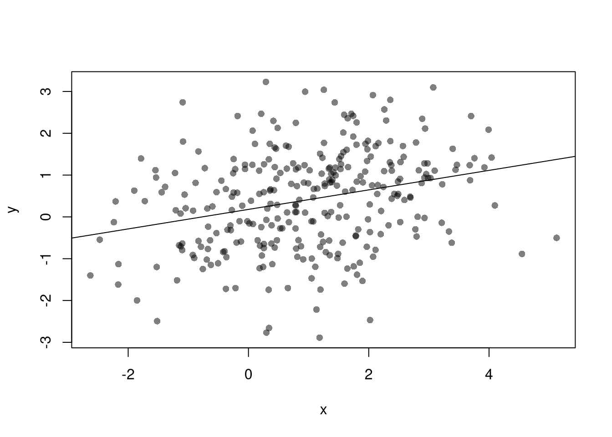

14 Observational Data
14.1 Temporal Interdependence
Stationary vs. Nonstationary
Measures of temporal association: ACF, CCF
14.3 Endogeneity Issues
Just like many economic relationships are nonlinear, many economic variables are endogenous. By this we typically mean that \(X\) is an outcome determined (or caused: \(\to\)) by some other variable.
- If \(Y \to X\), then we have reverse causality
- If \(Y \to X\) and \(X \to Y\), then we have simultaneity
- If \(Z\to Y\) and either \(Z\to X\) or \(X \to Z\), then we have omitted a potentially important variable
These endogeneity issues imply \(X\) and \(\epsilon\) are correlated, which is a barrier to interpreting OLS estimates causally. (\(X\) and \(\epsilon\) may be correlated for other reasons too, such as when \(X\) is measured with error.)
# Simulate data with an endogeneity issue
n <- 300
z <- rbinom(n,1,.5)
xy <- sapply(z, function(zi){
y <- rnorm(1,zi,1)
x <- rnorm(1,zi*2,1)
c(x,y)
})
xy <- data.frame(x=xy[1,],y=xy[2,])
plot(y~x, data=xy, pch=16, col=grey(0,.5))
abline(lm(y~x,data=xy))
With multiple linear regression, endogeneity biases are not just a problem for your main variable of interest. Suppose your interested in how \(x_{1}\) affects \(y\), conditional on \(x_{2}\). Letting \(X=[x_{1}, x_{2}]\), you estimate \[\begin{eqnarray} \hat{\beta}_{OLS} = [X'X]^{-1}X'y \end{eqnarray}\] You paid special attention in your research design to find a case where \(x_{1}\) is truly exogenous. Unfortunately, \(x_{2}\) is correlated with the error term. (How unfair, I know, especially after all that work). Nonetheless, \[\begin{eqnarray} \mathbb{E}[X'\epsilon] = \begin{bmatrix} 0 \\ \rho \end{bmatrix}\\ \mathbb{E}[ \hat{\beta}_{OLS} - \beta] = [X'X]^{-1} \begin{bmatrix} 0 \\ \rho \end{bmatrix} = \begin{bmatrix} \rho_{1} \\ \rho_{2} \end{bmatrix} \end{eqnarray}\] The magnitude of the bias for \(x_{1}\) thus depends on the correlations between \(x_{1}\) and \(x_{2}\) as well as \(x_{2}\) and \(\epsilon\).
I will focus on the seminal economic example to provide some intuition.
Competitive Market Equilibrium. This model has three structural relationships: (1) market supply is the sum of quantities supplied by individual firms at a given price, (2) market demand is the sum of quantities demanded by individual people at a given price, and (3) market supply equals market demand in equilibrium. Assuming market supply and demand are linear, we can write these three relationships as \[\begin{eqnarray} Q_{S}(P) &=& A_{S} + B_{S} P + E_{S},\\ Q_{D}(P) &=& A_{D} - B_{D} P + E_{D},\\ Q_{D} &=& Q_{S} = Q. %% $Q_{D}(P) = \sum_{i} q_{D}_{i}(P)$, \end{eqnarray}\] This last equation implies a simultaneous “reduced form” relationship where both the price and the quantity are outcomes. With a linear parametric structure to these equations, we can use algebra to solve for the equilibrium price and quantity analytically as \[\begin{eqnarray} P^{*} &=& \frac{A_{D}-A_{S}}{B_{D}+B_{S}} + \frac{E_{D} - E_{S}}{B_{D}+B_{S}}, \\ Q^{*} &=& \frac{A_{S}B_{D}+ A_{D}B_{S}}{B_{D}+B_{S}} + \frac{E_{S}B_{D}+ E_{D}B_{S}}{B_{D}+B_{S}}. \end{eqnarray}\]
# Demand Curve Simulator
qd_fun <- function(p, Ad=8, Bd=-.8, Ed_sigma=.25){
Qd <- Ad + Bd*p + rnorm(1,0,Ed_sigma)
return(Qd)
}
# Supply Curve Simulator
qs_fun <- function(p, As=-8, Bs=1, Es_sigma=.25){
Qs <- As + Bs*p + rnorm(1,0,Es_sigma)
return(Qs)
}
# Quantity Supplied and Demanded at 3 Prices
cbind(P=8:10, D=qd_fun(8:10), S=qs_fun(8:10))## P D S
## [1,] 8 1.57237229 -0.3224074
## [2,] 9 0.77237229 0.6775926
## [3,] 10 -0.02762771 1.6775926# Market Equilibrium Finder
eq_fun <- function(demand, supply, P){
# Compute EQ (what we observe)
eq_id <- which.min( abs(demand-supply) )
eq <- c(P=P[eq_id], Q=demand[eq_id])
return(eq)
}# Simulations Parameters
N <- 300 # Number of Market Interactions
P <- seq(5,10,by=.01) # Price Range to Consider
# Generate Data from Competitive Market
# Plot Underlying Process
plot.new()
plot.window(xlim=c(0,2), ylim=range(P))
EQ1 <- sapply(1:N, function(n){
# Market Data Generating Process
demand <- qd_fun(P)
supply <- qs_fun(P)
eq <- eq_fun(demand, supply, P)
# Plot Theoretical Supply and Demand
lines(demand, P, col=grey(0,.01))
lines(supply, P, col=grey(0,.01))
points(eq[2], eq[1], col=grey(0,.05), pch=16)
# Save Data
return(eq)
})
axis(1)
axis(2)
mtext('Quantity',1, line=2)
mtext('Price',2, line=2)
Suppose we ask “what is the effect of price on quantity?” You can simply run a regression of quantity (“Y”) on price (“X”): \(\widehat{\beta}_{OLS} = Cov(Q^{*}, P^{*}) / Var(P^{*})\). You get a number back, but it is hard to interpret meaningfully.
##
## Call:
## lm(formula = Q ~ P, data = dat1)
##
## Residuals:
## Min 1Q Median 3Q Max
## -0.54547 -0.11614 -0.00358 0.11621 0.53075
##
## Coefficients:
## Estimate Std. Error t value Pr(>|t|)
## (Intercept) 0.53119 0.48762 1.089 0.277
## P 0.04072 0.05476 0.744 0.458
##
## Residual standard error: 0.1811 on 298 degrees of freedom
## Multiple R-squared: 0.001852, Adjusted R-squared: -0.001497
## F-statistic: 0.553 on 1 and 298 DF, p-value: 0.4577This simple derivation has a profound insight: price-quantity data does not generally tell you how price affects quantity (or vice-versa). The reason is simultaneity: price and quantity mutually cause one another in markets.6
Moreover, this example also clarifies that our initial question “what is the effect of price on quantity?” is misguided. We could more sensibly ask “what is the effect of price on quantity supplied?” or “what is the effect of price on quantity demanded?”
14.4 Historical Event Studies
Historical Event Studies, sometimes called “natural experiments”, are case studies to remedy the endogeneity issues in observational data. The elementary versions use linear regressions, so I can cover them here using our competitive equilibrium example from before.
Two Stage Least Squares (2SLS). If you have exogenous variation on one side of the market, “shocks”, you can get information on the other. For example, lower costs shift out supply (more is produced at given price), allowing you to trace out part of a demand curve. Experimental manipulation of \(A_{S}\) leads to \[\begin{eqnarray} \label{eqn:comp_market_statics} \frac{d P^{*}}{d A_{S}} = \frac{-1}{B_{D}+B_{S}}, \\ \frac{d Q^{*}}{d A_{S}} = \frac{B_{D}}{B_{D}+B_{S}}. \end{eqnarray}\] So, absent any other changes, we could recover \(-B_{D}=d Q^{*}/d P^{*}\). In this case, the supply shock has identified the demand slope.7
# New Observations After Cost Change
EQ2 <- sapply(1:N, function(n){
demand <- qd_fun(P)
supply2 <- qs_fun(P, As=-6.5) # More Supplied at Given Price
eq <- eq_fun(demand, supply2, P)
return(eq)
# lines(supply2, P, col=rgb(0,0,1,.01))
#points(eq[2], eq[1], col=rgb(0,0,1,.05), pch=16)
})
dat2 <- data.frame(t(EQ2), cost='2')
# Plot Market Data
dat2 <- rbind(dat1, dat2)
cols <- ifelse(as.numeric(dat2$cost)==2, rgb(0,0,1,.2), rgb(0,0,0,.2))
plot.new()
plot.window(xlim=c(0,2), ylim=range(P))
points(dat2$Q, dat2$P, col=cols, pch=16)
axis(1)
axis(2)
mtext('Quantity',1, line=2)
mtext('Price',2, line=2)
We are not quite done yet, however. We have pooled two datasets that are separately problematic, and the noisiness of the process within each group affects our OLS estimate: \(\widehat{\beta}_{OLS}=Cov(Q^{*}, P^{*}) / Var(P^{*})\).
##
## Call:
## lm(formula = Q ~ P, data = dat2)
##
## Residuals:
## Min 1Q Median 3Q Max
## -0.72222 -0.16511 -0.00112 0.16667 0.67665
##
## Coefficients:
## Estimate Std. Error t value Pr(>|t|)
## (Intercept) 6.32899 0.16562 38.21 <2e-16 ***
## P -0.60386 0.01953 -30.92 <2e-16 ***
## ---
## Signif. codes: 0 '***' 0.001 '**' 0.01 '*' 0.05 '.' 0.1 ' ' 1
##
## Residual standard error: 0.2286 on 598 degrees of freedom
## Multiple R-squared: 0.6152, Adjusted R-squared: 0.6145
## F-statistic: 955.9 on 1 and 598 DF, p-value: < 2.2e-16Although the individual observations are noisy, we can compute the change in the expected values \(d \mathbb{E}[Q^{*}] / d \mathbb{E}[P^{*}] =-B_{D}\). Empirically, this is estimated via the change in average value.
# Wald (1940) Estimate
dat_mean <- rbind(
colMeans(dat2[dat2$cost==1,1:2]),
colMeans(dat2[dat2$cost==2,1:2]))
dat_mean## P Q
## [1,] 8.902567 0.8937285
## [2,] 8.030433 1.5391571## [1] -0.74We can also seperately recover \(d \mathbb{E}[Q^{*}] / d \mathbb{E}[A_{S}]\) and \(d \mathbb{E}[P^{*}] / d \mathbb{E}[A_{S}]\) from seperate regressions
# Heckman (2000, p.58) Estimate
ols_1 <- lm(P~cost, data=dat2)
ols_2 <- lm(Q~cost, data=dat2)
B_est2 <- coef(ols_2)/coef(ols_1)
round(B_est2[[2]],2)## [1] -0.74Mathematically, we can also do this in a single step by exploiting linear algebra: \[\begin{eqnarray} \frac{\frac{ Cov(Q^{*},A_{S})}{ V(A_{S}) } }{\frac{ Cov(P^{*},A_{S})}{ V(A_{S}) }} &=& \frac{Cov(Q^{*},A_{S} )}{ Cov(P^{*},A_{S})}. \end{eqnarray}\]
Alternatively, we can recover the same estimate using an instrumental variables regression that has two equations: \[\begin{eqnarray} P &=& \alpha_{1} + A_{S} \beta_{1} + \epsilon_{1} \\ Q &=& \alpha_{2} + \hat{P} \beta_{2} + \epsilon_{2}. \end{eqnarray}\] In the first regression, we estimate the average effect of the cost shock on prices. In the second equation, we estimate how the average effect of prices which are exogenous to demand affect quantity demanded. To see this, first substitute the equilibrium condition into the supply equation: \(Q_{D}=Q_{S}=A_{S}+B_{S} P + E_{S}\), lets us rewrite \(P\) as a function of \(Q_{D}\). This yields two theoretical equations \[\begin{eqnarray} \label{eqn:linear_supply_iv} P &=& -\frac{A_{S}}{{B_{S}}} + \frac{Q_{D}}{B_{S}} - \frac{E_{S}}{B_{S}} \\ \label{eqn:linear_demand_iv} Q_{D} &=& A_{D} + B_{D} P + E_{D}. \end{eqnarray}\]
# Two Stage Least Squares Estimate
ols_1 <- lm(P~cost, data=dat2)
dat2_new <- cbind(dat2, Phat=predict(ols_1))
reg_2sls <- lm(Q~Phat, data=dat2_new)
summary(reg_2sls)##
## Call:
## lm(formula = Q ~ Phat, data = dat2_new)
##
## Residuals:
## Min 1Q Median 3Q Max
## -0.57884 -0.11513 -0.00611 0.11558 0.52413
##
## Coefficients:
## Estimate Std. Error t value Pr(>|t|)
## (Intercept) 7.48214 0.14054 53.24 <2e-16 ***
## Phat -0.74006 0.01658 -44.64 <2e-16 ***
## ---
## Signif. codes: 0 '***' 0.001 '**' 0.01 '*' 0.05 '.' 0.1 ' ' 1
##
## Residual standard error: 0.1771 on 598 degrees of freedom
## Multiple R-squared: 0.7692, Adjusted R-squared: 0.7688
## F-statistic: 1993 on 1 and 598 DF, p-value: < 2.2e-16# One Stage Instrumental Variables Estimate
library(fixest)
reg2_iv <- feols(Q~1|P~cost, data=dat2)
summary(reg2_iv)## TSLS estimation - Dep. Var.: Q
## Endo. : P
## Instr. : cost
## Second stage: Dep. Var.: Q
## Observations: 600
## Standard-errors: IID
## Estimate Std. Error t value Pr(>|t|)
## (Intercept) 7.482138 0.188708 39.6494 < 2.2e-16 ***
## fit_P -0.740057 0.022259 -33.2472 < 2.2e-16 ***
## ---
## Signif. codes: 0 '***' 0.001 '**' 0.01 '*' 0.05 '.' 0.1 ' ' 1
## RMSE: 0.237363 Adj. R2: 0.58318
## F-test (1st stage), P: stat = 2,971.6, p < 2.2e-16, on 1 and 598 DoF.
## Wu-Hausman: stat = 404.9, p < 2.2e-16, on 1 and 597 DoF.Within Group Variance. You can experiment with the effect of different variances on both OLS and IV in the code below. And note that if we had multiple supply shifts and recorded their magnitudes, then we could recover more information about demand, perhaps tracing it out entirely.
# Examine
Egrid <- expand.grid(Ed_sigma=c(.001, .25, 1), Es_sigma=c(.001, .25, 1))
Egrid_regs <- lapply(1:nrow(Egrid), function(i){
Ed_sigma <- Egrid[i,1]
Es_sigma <- Egrid[i,2]
EQ1 <- sapply(1:N, function(n){
demand <- qd_fun(P, Ed_sigma=Ed_sigma)
supply <- qs_fun(P, Es_sigma=Es_sigma)
return(eq_fun(demand, supply, P))
})
EQ2 <- sapply(1:N, function(n){
demand <- qd_fun(P,Ed_sigma=Ed_sigma)
supply2 <- qs_fun(P, As=-6.5,Es_sigma=Es_sigma)
return(eq_fun(demand, supply2, P))
})
dat <- rbind(
data.frame(t(EQ1), cost='1'),
data.frame(t(EQ2), cost='2'))
return(dat)
})
Egrid_OLS <- sapply(Egrid_regs, function(dat) coef( lm(Q~P, data=dat)))
Egrid_IV <- sapply(Egrid_regs, function(dat) coef( feols(Q~1|P~cost, data=dat)))
#cbind(Egrid, coef_OLS=t(Egrid_OLS)[,2], coef_IV=t(Egrid_IV)[,2])
lapply( list(Egrid_OLS, Egrid_IV), function(ei){
Emat <- matrix(ei[2,],3,3)
rownames(Emat) <- paste0('Ed_sigma.',c(.001, .25, 1))
colnames(Emat) <- paste0('Es_sigma.',c(.001, .25, 1))
return( round(Emat,2))
})## [[1]]
## Es_sigma.0.001 Es_sigma.0.25 Es_sigma.1
## Ed_sigma.0.001 -0.80 -0.80 -0.80
## Ed_sigma.0.25 -0.63 -0.62 -0.74
## Ed_sigma.1 0.36 0.28 -0.13
##
## [[2]]
## Es_sigma.0.001 Es_sigma.0.25 Es_sigma.1
## Ed_sigma.0.001 -0.80 -0.80 -0.80
## Ed_sigma.0.25 -0.80 -0.78 -0.81
## Ed_sigma.1 -0.68 -0.86 -0.76Caveats. 2SLS regression analysis can be very insightful, but I also want to stress some caveats about their practical application.
We always get coefficients back when running feols, and sometimes the computed p-values are very small. The interpretation of those numbers rests on many assumptions:
- Instrument exogeneity (Exclusion Restriction): The instrument must affect outcomes only through the treatment variable (e.g., only supply is affected directly, not demand).
- Instrument relevance: The instrument must be strongly correlated with the endogenous regressor, implying the shock creates meaningful variation.
- Functional form correctness: Supply and demand are assumed linear and additively separable.
- Multiple hypothesis testing risks: We were not repeatedly testing different instruments, which can artificially produce significant findings by chance.
We are rarely sure that all of these assumptions hold, and this is one reason why researchers often also report their OLS results. But that is insufficient, as spatial and temporal dependence also complicate inference:
- Exclusion restriction violations: Spatial or temporal spillovers may cause instruments to affect the outcome through unintended channels, undermining instrument exogeneity.
- Weak instruments: Spatial clustering, serial correlation, or network interdependencies can reduce instrument variation, causing weak instruments.
- Inference and standard errors: Spatial or temporal interdependence reduces the effective sample size, making conventional standard errors misleadingly small.
Other Types of Event Studies In addition to 2SLS, “RDD” and “DID” methods are also used in Historical Event Studies to address endogeneity issues in observational data. Moreover, the elementary versions of these tools are also linear regression. “RDD” and “DID” methods are designed for actual experiments, however, so we will cover them in that chapter instead.
14.5 More Literature
You are directed to the following resources which discusses endogeneity in more detail and how it applies generally.
- Causal Inference for Statistics, Social, and Biomedical Sciences: An Introduction
- https://www.mostlyharmlesseconometrics.com/
- https://www.econometrics-with-r.org
- https://bookdown.org/paul/applied-causal-analysis/
- https://mixtape.scunning.com/
- https://theeffectbook.net/
- https://www.r-causal.org/
- https://matheusfacure.github.io/python-causality-handbook/landing-page.html
For IV,
- https://cameron.econ.ucdavis.edu/e240a/ch04iv.pdf
- https://mru.org/courses/mastering-econometrics/introduction-instrumental-variables-part-one
- https://www.econometrics-with-r.org/12-ivr.html
- https://bookdown.org/paul/applied-causal-analysis/estimation-2.html
- https://mixtape.scunning.com/07-instrumental_variables
- https://theeffectbook.net/ch-InstrumentalVariables.html
- http://www.urfie.net/read/index.html#page/247
Although there are many ways this simultaneity can happen, economic theorists have made great strides in analyzing the simultaneity problem as it arises from equilibrium market relationships. In fact, 2SLS arose to understand agricultural markets.↩︎
Notice that even in this linear model, however, all effects are conditional: The effect of a cost change on quantity or price depends on the demand curve. A change in costs affects quantity supplied but not quantity demanded (which then affects equilibrium price) but the demand side of the market still matters! The change in price from a change in costs depends on the elasticity of demand.↩︎